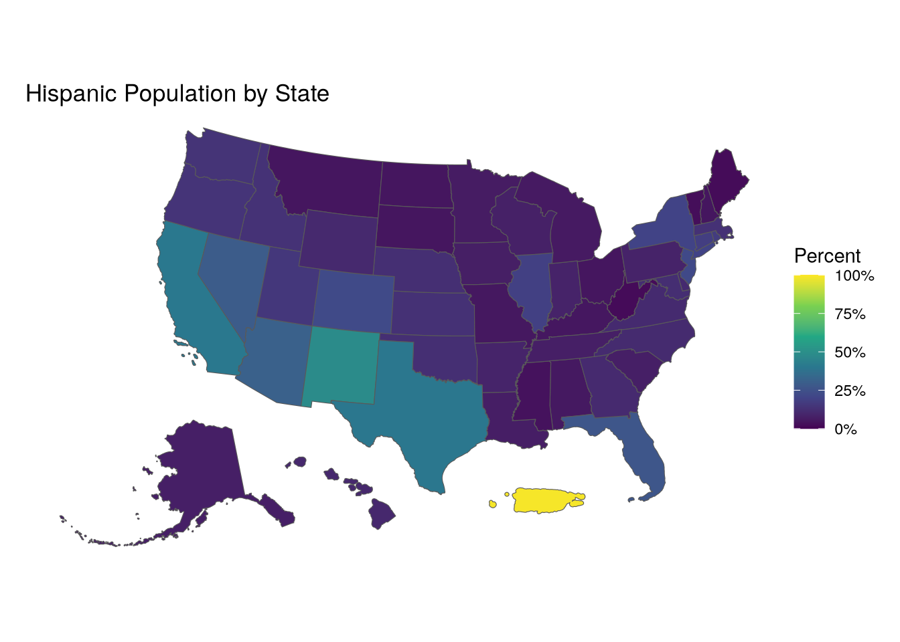
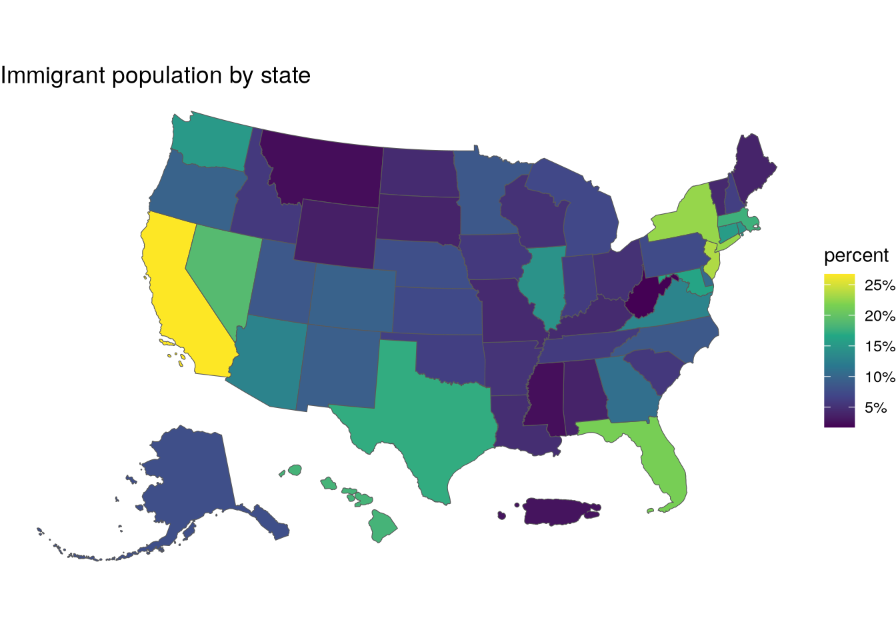
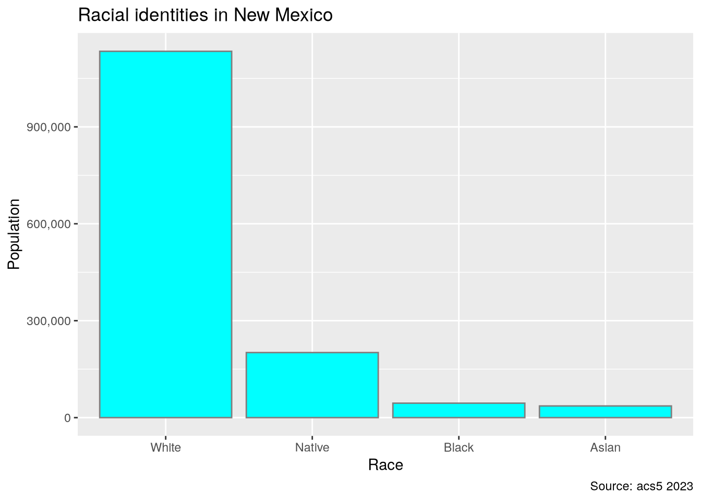
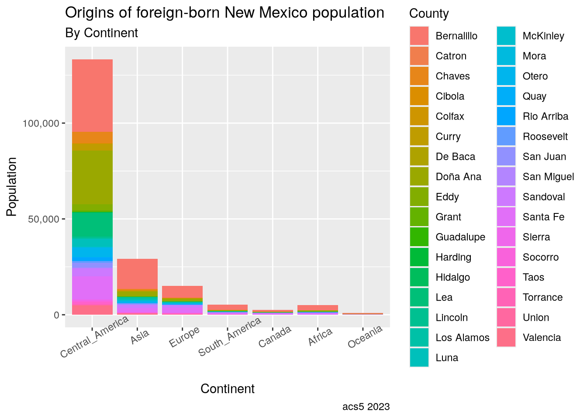
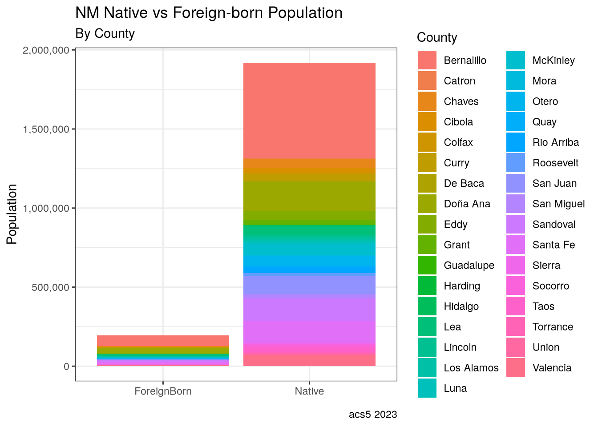
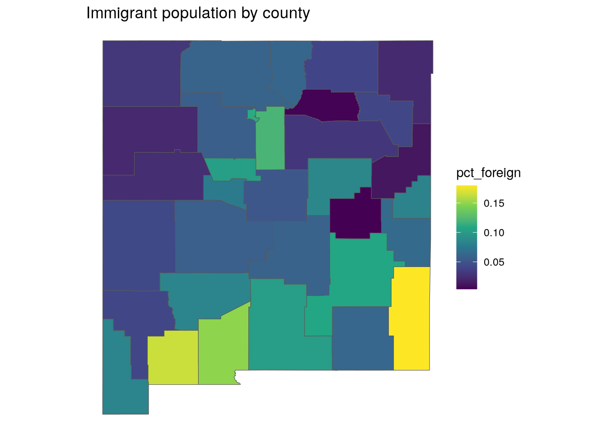
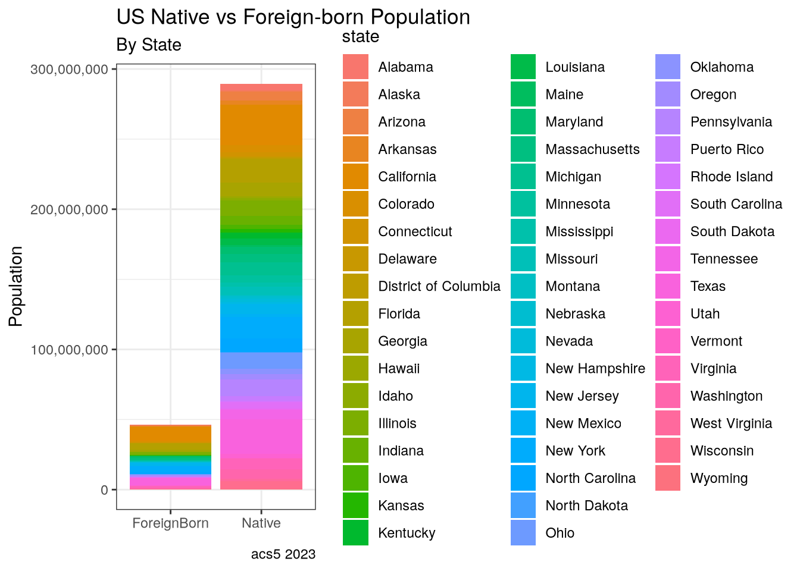

library(tidycensus)
library(tidyverse)
library(tigris)
library(patchwork)
library(sf)
options(tigris_use_cache = TRUE)This article will explore some interesting aspects of New Mexico’s racial demographics using R and the TidyCensus package. The US Census Bureau makes an amazing amount of data available to the public on https://census.gov. The site allows you to easily search for and download demographic information with myriad variables and geographic subsets. The site also provides an API for programmatic access, and R is fortunate to have the TidyCensus package to easily grab data of interest to the programmer.
New Mexico has relatively large Native American and Hispanic populations. Nearly half of New Mexico residents are Hispanic, compared to a national average of around 20% (we’ll calculate it later). The profile of Latinos in New Mexico is very different from the rest of the country, as we shall see.
Getting started
Let’s see the top 5 states by total Latinos. Not surprisingly, the largest states have the largest population of Hispanics.
us_hisp_pct |>
st_drop_geometry() |>
slice_max(order_by = Hispanic, n = 8) |>
select(State, Hispanic)# A tibble: 8 × 2
State Hispanic
<chr> <dbl>
1 California 15630830
2 Texas 11697134
3 Florida 5865737
4 New York 3898652
5 Puerto Rico 3215824
6 Illinois 2348118
7 Arizona 2255770
8 New Jersey 2032968On the other hand, looking by percentage tells a different story:
us_hisp_pct |>
st_drop_geometry() |>
slice_max(order_by = Hispanic_Pct, n = 8) |>
select(State, Hispanic_Pct)# A tibble: 8 × 2
State Hispanic_Pct
<chr> <dbl>
1 Puerto Rico 0.988
2 New Mexico 0.482
3 California 0.398
4 Texas 0.395
5 Arizona 0.310
6 Nevada 0.292
7 Florida 0.267
8 Colorado 0.222As you can see, New Mexico is the state with the highest proportion of Latinos, nearly half, and almost 10% higher than the next highest states. Let’s look at a map:

We can see how Latinos are spread across New Mexico:

Not only is the Hispanic population of New Mexico uniquely large in percentage terms, it is also unusual in terms of the racial identity of the Hispanics. Unlike Latinos in most of the rest of the country, many Hispanics in New Mexico do not identify at all with Mexico or Central America, but directly with their European ancestry.
The rest of this article will explore the Hispanic population in New Mexico and the historical context which explains this particular situation. Along the way, I will show how to use the R package tidycensus to access the wealth of data on https://census.gov.
A little history
New Mexico has the oldest state capital in the United States, Santa Fe having been founded 10 years before Boston. While the British were exploring from the coast, the Spaniards were moving upwards from Mexico into the territory that would become New Mexico.
Mexico won independence from Spain in 1821, and that included New Mexico. While the European residents gave nominal allegiance to Mexico, it was never very enthusiastic. After the Treaty of Hidalgo, in which the territory of New Mexico was ceded to the United States, Hispanics quickly dropped any pro-Mexican sentiment and were anxious to assert their identity as Americans with roots in Europe, not Latin America. This group is called nuevomexicanos by many, but in New Mexico they are called Hispanos.
Racial identity of New Mexicans
Before looking at Hispanics, let’s get a sense of the racial identity of New Mexicans. Hispanic is not a racial category, so in this breakdown they can be spread across different races.
As I said, there is an almost overwhelming amount of data available, and the biggest challenge is to figure out what data you need. Aside from the decennial census, the census department does regular surveys called the American Community Surveys, which exist in 1-year and 5-year versions. Within each datasets are hundreds or thousands of variables. To make things worse, variable names are not necessarily consistent from one year to another. Fortunately, tidycensus can download all of the variables for a particular year and set in the form of a table, which can be searched and filtered with View(). The load_variables() function takes a date, and I specify that I want the variables from the 5-year American Community Survey.
v23 <- load_variables(2023, "acs5", cache = TRUE)
View(v23)From this, I will create a vector of the variables, giving them human-readable names. I’ll only take the top 4 by population.
race_vars = c(
White = "B02001_002",
Black = "B02001_003",
Native_American = "B02001_004",
Asian = "B02001_005"
)With that, I’m ready to get the data. There are different functions available, depending on the tables you want to query. For the 5-year ACS, the function is get_acs(). The function requires a geography, the variables you want returned, and a year. Many geographies are available, including “us”, “state”, “county” and “tract” (census tract). Some geographies can take an additional argument restricting the data retrieved, as shown in this example where I want county level data, but only for New Mexico.
The get_acs() function also has a useful argument, geometry = TRUE, which adds the geometry and returns an sf object, which we need for mapping. Unfortunately, as of this writing I am unable to get it to work with county or state, although is does work for tract-level data. So we have to do a little extra processing, nothing terrible. I got the geometries from the tigris package like this:
```{r}
nm_counties <- counties("NM") |>
select(GEOID, county = NAME, geometry)
```The GEOID is what will allow us to join the geometries to the data frame returned by get_acs(). I also need to turn it into an sf object in order to map it.
races <- get_acs(
geography = "county",
state = "NM",
variables = race_vars,
summary_var = "B02001_001",
year = 2023,
cache_table = TRUE) |>
select(-moe, -summary_moe) |>
pivot_wider(names_from = variable, values_from = estimate) |>
left_join(nm_counties, by = "GEOID") |>
st_as_sf()Getting data from the 2019-2023 5-year ACSLet’s see the overall picture. Since this is a histogram, I’ll drop the geometry column. I’ll use transpose() from data.table so I can feed it to ggplot.
races |>
summarise(
White = sum(White),
Native = sum(Native_American),
Asian = sum(Asian),
Black = sum(Black)
) |>
st_drop_geometry() |>
data.table::transpose(keep.names = "race") |>
mutate(race = fct_reorder(race, desc(V1))) |>
ggplot(aes(x = race, y = V1)) +
geom_col(fill = "cyan", color = "grey50") +
labs(
title = "Racial identities in New Mexico",
x = "Race", y = "Population",
caption = "Source: acs5 2023"
) +
scale_y_continuous(labels = scales::comma) +
theme_gray()
counties_top_8 <- get_acs(
geography = "county",
state = "NM",
variables = "B03001_001",
year = 2023,
cache_table = TRUE) |>
slice_max(order_by = estimate, n = 8) |>
left_join(nm_counties, by = "GEOID") |>
select(county)Getting data from the 2019-2023 5-year ACSraces |>
filter(county %in% counties_top_8$county) |>
select(-GEOID, -NAME) |>
pivot_longer(cols = White:Asian, names_to = "variable", values_to = "estimate", values_drop_na = T) |>
mutate(county = fct_reorder(county, desc(estimate))) |>
ggplot(aes(x = county, y = estimate, fill = variable)) +
geom_col() +
labs(x = "County",
y = "Population",
fill = "Race",
title = "New Mexico population by race",
subtitle = "Top 8 Counties by Population",
caption = "Source: census.gov acs5 2023") +
scale_y_continuous(labels = scales::comma) +
scale_fill_viridis_d(labels = c("Asian", "Black",
"Native American", "White")) +
theme_gray() +
theme(axis.text.x = element_text(angle = 30))
Immigrants in New Mexico
pob_vars = c(
Native = "B05002_002",
ForeignBorn = "B05002_013"
)immigration_23 <- get_acs(
geography = "county",
state = "NM",
variables = pob_vars,
summary_var = "B05002_001",
year = 2023,
cache_table = TRUE,
) |>
left_join(
nm_counties, by = "GEOID") |>
select(variable, estimate, moe,
county, summary_est, geometry)Getting data from the 2019-2023 5-year ACSggplot(immigration_23, aes(x = variable, y = estimate, fill = county)) +
geom_col() +
labs(x = element_blank(),
y = "Population",
fill = "County",
title = "NM Native vs Foreign-born Population",
subtitle = "By County",
caption = "acs5 2023") +
scale_y_continuous(labels = scales::comma) +
theme_bw()
immigration_23 |>
st_as_sf() |> st_transform(32113) |>
filter(variable == "ForeignBorn") |>
ggplot(aes(fill = estimate)) +
geom_sf(aes(geometry = geometry)) +
scale_fill_viridis_c(labels = scales::comma) +
labs(title = "Immigrant population by county") +
theme_void()
immigration_us <- get_acs(
geography = "state",
variables = pob_vars,
summary_var = "B05002_001",
year = 2023,
cache_table = TRUE,
) |>
left_join(states, by = "GEOID") |>
select(variable, estimate, moe,
state, summary_est, geometry) |>
st_as_sf()Getting data from the 2019-2023 5-year ACSimmigration_usSimple feature collection with 104 features and 5 fields
Geometry type: MULTIPOLYGON
Dimension: XY
Bounding box: xmin: -179.2311 ymin: 17.83151 xmax: 179.8597 ymax: 71.43979
Geodetic CRS: NAD83
# A tibble: 104 × 6
variable estimate moe state summary_est geometry
<chr> <dbl> <dbl> <chr> <dbl> <MULTIPOLYGON [°]>
1 Native 4862214 3595 Alabama 5054253 (((-85.4883 30.99706, -85.…
2 ForeignBorn 192039 3595 Alabama 5054253 (((-85.4883 30.99706, -85.…
3 Native 676840 2060 Alaska 733971 (((-179.2302 51.28393, -17…
4 ForeignBorn 57131 2060 Alaska 733971 (((-179.2302 51.28393, -17…
5 Native 6332589 8543 Arizona 7268175 (((-110.7507 37.00301, -11…
6 ForeignBorn 935586 8543 Arizona 7268175 (((-110.7507 37.00301, -11…
7 Native 2874432 3320 Arkansas 3032651 (((-90.95577 34.11871, -90…
8 ForeignBorn 158219 3321 Arkansas 3032651 (((-90.95577 34.11871, -90…
9 Native 28763259 34684 California 39242785 (((-116.1062 32.61848, -11…
10 ForeignBorn 10479526 34684 California 39242785 (((-116.1062 32.61848, -11…
# ℹ 94 more rowsggplot(immigration_us, aes(x = variable, y = estimate, fill = state)) +
geom_col() +
labs(x = element_blank(),
y = "Population",
title = "US Native vs Foreign-born Population",
subtitle = "By State",
caption = "acs5 2023") +
scale_y_continuous(labels = scales::comma) +
theme_bw()
orig_vars_23 = c(
Europe = "B05006_002",
Asia = "B05006_047",
Eastern_Asia = "B05006_048",
China = "B05006_049",
Asia_SC = "B05006_056",
Asia_SE = "B05006_068",
Vietnam = "B05006_077",
Asia_W = "B05006_079",
Africa = "B05006_095",
Oceania = "B05006_130",
Latin_America = "B05006_139",
Caribbean = "B05006_140",
Central_America = "B05006_154",
Mexico = "B05006_160",
South_America = "B05006_164",
Canada = "B05006_177"
)foreign_origin <- get_acs(
geography = "county",
state = "NM",
variables = orig_vars_23,
summary_var = "B05006_001",
year = 2023,
cache_table = TRUE
) |>
left_join(nm_counties, by = "GEOID") |>
select(variable, estimate, moe,
county, total = summary_est,
geometry)Getting data from the 2019-2023 5-year ACSforeign_origin# A tibble: 528 × 6
variable estimate moe county total geometry
<chr> <dbl> <dbl> <chr> <dbl> <MULTIPOLYGON [°]>
1 Europe 6116 887 Bernalillo 68910 (((-107.1968 35.21946, -107.196…
2 Asia 15672 938 Bernalillo 68910 (((-107.1968 35.21946, -107.196…
3 Eastern_Asia 3185 558 Bernalillo 68910 (((-107.1968 35.21946, -107.196…
4 China 2094 501 Bernalillo 68910 (((-107.1968 35.21946, -107.196…
5 Asia_SC 3956 595 Bernalillo 68910 (((-107.1968 35.21946, -107.196…
6 Asia_SE 6523 1010 Bernalillo 68910 (((-107.1968 35.21946, -107.196…
7 Vietnam 3390 708 Bernalillo 68910 (((-107.1968 35.21946, -107.196…
8 Asia_W 1933 614 Bernalillo 68910 (((-107.1968 35.21946, -107.196…
9 Africa 2668 660 Bernalillo 68910 (((-107.1968 35.21946, -107.196…
10 Oceania 456 148 Bernalillo 68910 (((-107.1968 35.21946, -107.196…
# ℹ 518 more rowsorig_vars_23 = c( Europe = “B05006_002”, Asia = “B05006_047”, Eastern_Asia = “B05006_048”, China = “B05006_049”, Asia_SC = “B05006_056”, Asia_SE = “B05006_068”, Vietnam = “B05006_077”, Asia_W = “B05006_079”, Africa = “B05006_095”, Oceania = “B05006_130”, Latin_America = “B05006_139”, Caribbean = “B05006_140”, Central_America = “B05006_154”, Mexico = “B05006_160”, South_America = “B05006_164”, Canada = “B05006_177” )
orig_vars_19 = c( Europe = “B05006_002”, Asia = “B05006_047”, Eastern_Asia = “B05006_048”, China = “B05006_049”, Asia_SC = “B05006_056”, Asia_SE = “B05006_067”, Vietnam = “B05006_076”, Asia_W = “B05006_078”, Africa = “B05006_091”, Oceania = “B05006_117”, Latin_America = “B05006_124”, Caribbean = “B05006_125”, Central_America = “B05006_138”, Mexico = “B05006_139”, South_America = “B05006_148”, Canada = “B05006_161” )
hisp_vars = c( Non_Hispanic = “B03001_002”, Hispanic = “B03001_003”, Hispanic_Mexican = “B03001_004”, Hispanic_PR = “B03001_005”, Hispanic_Cuba = “B03001_006”, Hispanic_DR = “B03001_007”, Hispanic_CA = “B03001_008”, Hispanic_SA = “B03001_016”, Hispanic_Spaniard = “B03001_028”, Hispanic_Spanish = “B03001_029”, Hispanic_Spanish_American = “B03001_030”, Hispanic_White = “B03002_013” )